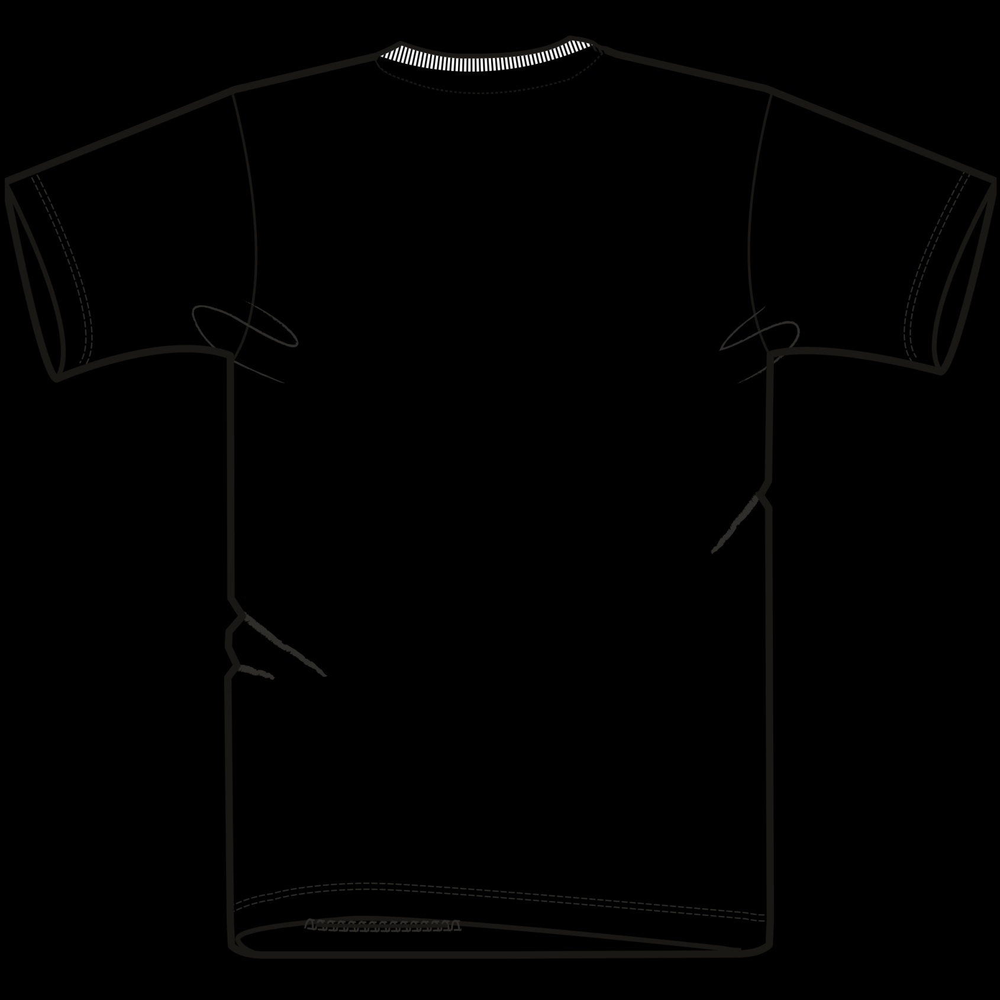

T-Shirts
Creator 2.0
Stanley/Stella
STTU169
STTU169


FrontansichtTechnische Skizze
FitMedium Fit
GrößenXXS – 5XL*
Gewicht180 g/m²
HerkunftBangladesch
Material
Singlejersey, 100 % Bio-Baumwolle, gekämmt, ringgesponnen. Heather Haze-Variante: 70 % Bio-Baumwolle, 30 % recycelte Baumwolle. Vorgewaschen.
Verarbeitung
- 1x1-Rippstrick am Halsausschnitt
- Nackenband aus Oberstoff
- Eingesetzte Ärmel
- Doppelabsteppung an Ärmelenden und unterem Saum
Farben
4Weiß
47Farben
6Ess. Heathers
1Spec. Heather
Auswahl: White, Black, French Navy, Burgundy, Bright Blue, Anthracite, Khaki, Cotton Pink, Deep Teal, Mocha
 GOTS zertifiziert
GOTS zertifiziert GRS (Heather Haze)
GRS (Heather Haze) OEKO-TEX 100
OEKO-TEX 100 Fair Wear
Fair Wear 30°C waschen
30°C waschen Nicht bleichen
Nicht bleichen Nicht trocknergeeignet
Nicht trocknergeeignet Niedrig bügeln
Niedrig bügeln Nicht chem. reinigen
Nicht chem. reinigenNadel & Zwirn — TextilkatalogSeite 03